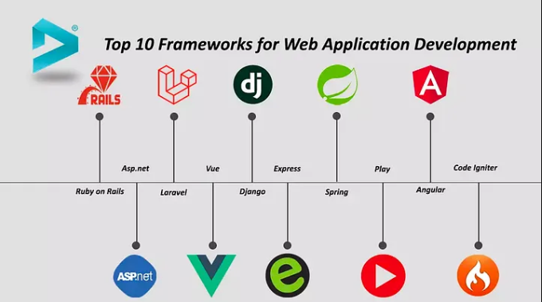

The Frameworks Foundation
Posted by Julius Ray L. Paampag
The foundation of a framework is its core architecture, guiding principles, and reusable components. It provides a stable base so you do not start from scratch, ensuring consistency, scalability, and structured logic across a project, app, or system.
Core Elements of a Framework Foundation
- Architecture: The basic structural pattern (like MVC) that dictates how data and user interfaces interact.
- Reusable Code: Pre-built libraries, functions, or UI elements that speed up creation.
- Design Principles: Core rules like "mobile-first" or modularity that keep code and logic clean.
- Standardized Rules: Uniform conventions for naming, formatting, and file organization.
Common Types and Their Bases
- Web/UI Frameworks (e.g., Foundation or Bootstrap): Built on HTML, CSS, and JavaScript grids to manage layout and design response.
- Software Frameworks (e.g., React, Ruby on Rails): Built on programming logic to handle data routing, server requests, and states
- Research/Conceptual Frameworks: Built on established theories or mental models to guide scientific studies or business strategies.
What is Framework?
In general, a framework is a real or conceptual structure intended to serve as a support or guide for the building of something that expands the structure into something useful. In computer systems, a framework is often a layered structure indicating what kind of programs can or should be built and how they would interrelate. Some computer system frameworks also include actual programs, specify programming interfaces, or offer programming tools for using the frameworks.

What is the purpose of a framework in computing?
In computing and programming, a framework provides a structure on which new software programs and applications can be built. A framework may be for a set of functions in a system and how they interrelate; the layers of an operating system or an application subsystem; or how communication should be standardized at some level of a network.
The most reliable, popular frameworks include various tools for code development, testing and debugging. Many frameworks also provide templates that can be reused and modified per application requirements. These prebuilt, modifiable elements let programmers build new programs without having to start over from scratch. With the framework as a base, they can add higher-level functionality to build a high-quality software product faster, with fewer errors.
Selecting the right framework for the chosen programming language and software project is vital. Different programming languages provide different types of frameworks. Some frameworks provide specific features or functionalities for specific tasks and are unsuitable for other tasks.
Core Architecture and Routing
- Routing System: Maps web URLs to specific functions or code blocks.
- Request and Response Handlers: Manages incoming user data and outgoing server data.
- Architecture Pattern: Divides tasks using models, views, and controllers or modern component systems.
You can learn more at MDN Web Docs
Why should you learn Frameworks?
Key Benefits of Learning Frameworks
- Faster Development: Frameworks handle mundane, repetitive tasks.
- Built-in Security: They automatically prevent major flaws like SQL injection
- Cleaner Organization: They enforce structured architectural patterns like MVC
- Easier Maintenance: Standardized code rules make team collaboration seamless.
- Career Growth: Most modern tech companies require framework knowledge
How does Frameworks work?
Inversion of Control: The framework runs the main loop. It decides when to trigger your custom pieces of code through predefined spots called "hooks" or "callbacks"
Predefined Architecture: It forces a specific project layout (like folders for models, views, and controllers) to keep code clean and organized.
Built-in Tools: It comes with ready helpers for common tasks like talking to databases, handling user web requests, or managing security.
Why We Use Frameworks
- Saves Time: You avoid writing low-level infrastructure code.
- Consistency: Teams follow the same set of rules and best practices.
- Reliability: The core engine is already tested and optimized by others.
By doing a lot of practice, you will definitely experience errors and bugs in your code, but don't worry, you will overcome them all!